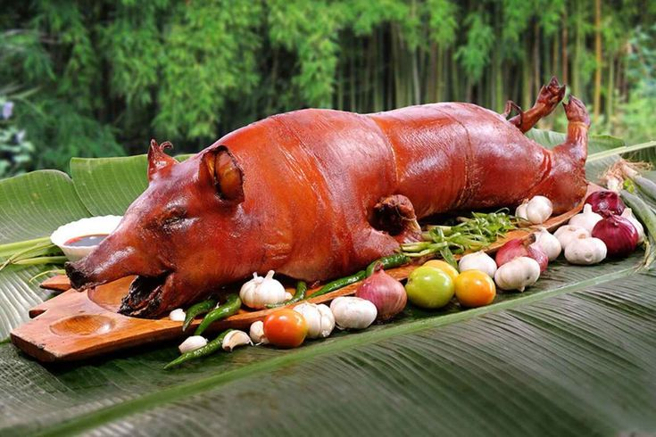
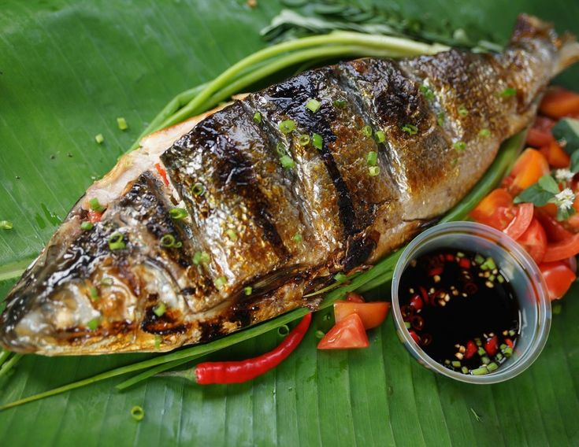
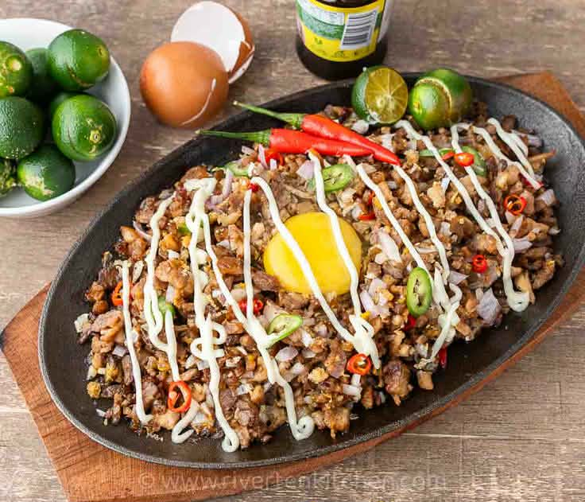
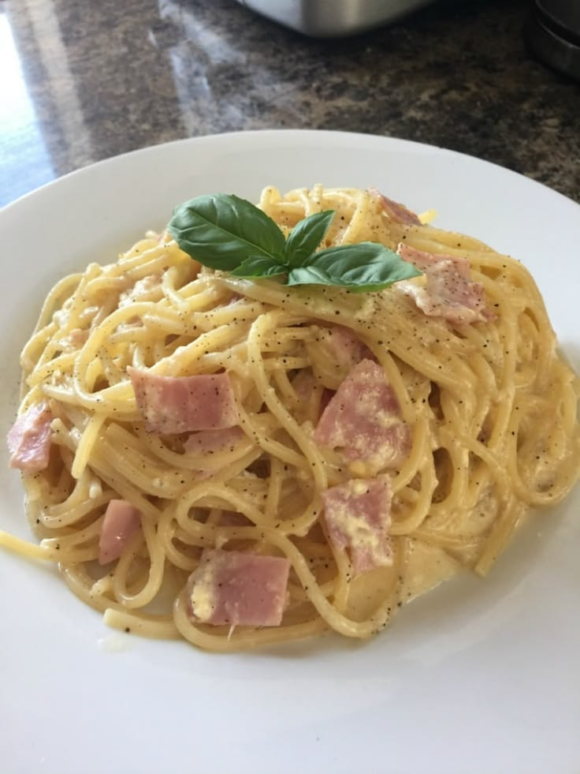
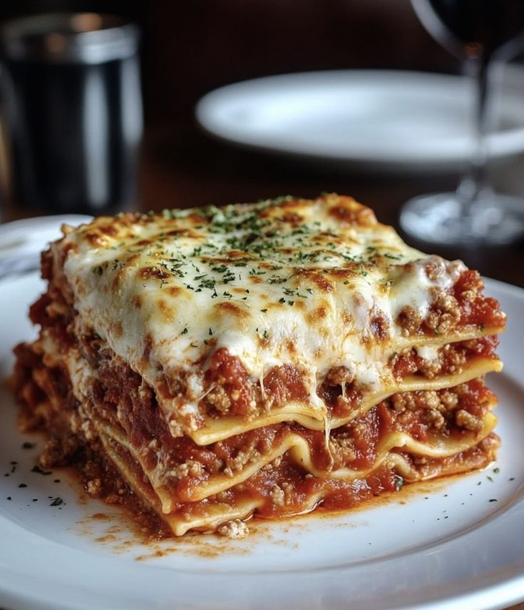
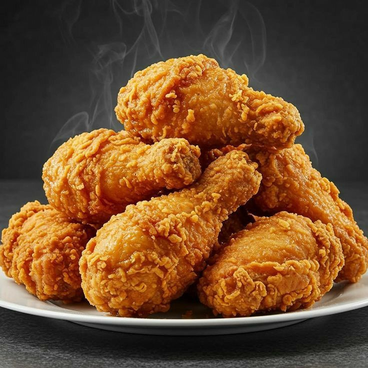
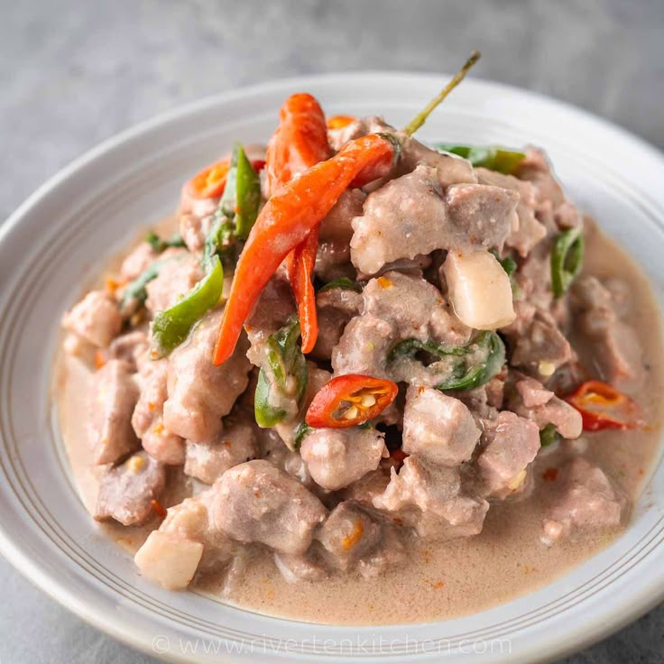

My Favorite Foods
The following photos will show some of my favorite foods.
1. Lechon

Lechon is one of my favorite Filipino dishes. It is made from roasted pork with crispy skin and juicy meat. It is served during celebrations and special occasions.
2. Grilled Bangus

Grilled Bangus is a delicious Filipino dish made from milkfish cooked over charcoal. It has a smoky flavor and is often served with rice and a dipping sauce. My favorite part of it is the fat.
3. Sisig

Sisig is a popular Filipino dish made with chopped pork, onions, and seasonings. It is usually served hot and you crack an egg ang put some calamansi to put savory flavor. I like it also because of the spiciness of it, I like spicy.
4. Carbonara

Carbonara is a creamy pasta dish made with pasta, cheese, milk or cream, and other ingredients. I love its rich, smooth, and delicious flavor. My mother cooks it super yummy.
5. lazana

Lasagna is an Italian pasta dish made with layers of pasta, meat sauce, cheese, and creamy white sauce. It is flavorful, cheesy, and satisfying. The cheese is so good.
6. Fried Chicken

Fried chicken is a popular dish loved by many people. It has a crispy golden coating on the outside and tender, juicy meat on the inside.
7. Bicol Express

Bicol Express is a traditional Filipino dish made with pork, coconut milk, chili peppers, and shrimp paste. It is known for its creamy, spicy, and flavorful taste. I like it super spicy!
|